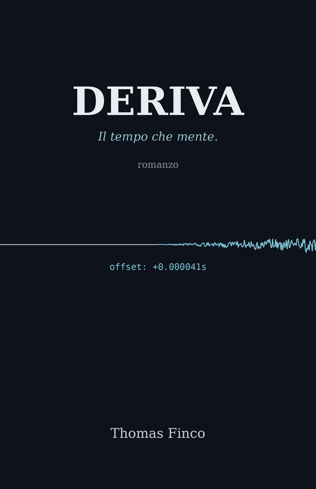

Che ora è davvero?
Borse, banche e reti elettriche si affidano a server di tempo agganciati a orologi atomici e al segnale GPS. Se l'ora si sposta di pochi microsecondi, di solito nessuno se ne accorge.

Il tempo che mente.
Uno scarto di 41 microsecondi. Per tutti è rumore. Per Elena Marchi è una firma.
Techno-thriller di Thomas Finco
Il libro
A Trieste, Elena Marchi gestisce un cluster di server di tempo agganciati a orologi atomici: un lavoro invisibile da cui dipendono borse, reti elettriche e banche.
Quando si accorge che qualcosa, in rete, sta spostando le lancette, nessuno la prende sul serio. Quattro anni prima ha avuto ragione troppo presto, e l'ha pagata cara.
Non è un attacco che si vede. È una deriva lenta che rende inaffidabili i timestamp, e senza timestamp non si può più dire cosa è successo prima di cosa.
Da Trieste a Londra, fino alle porte di Parigi, Elena dovrà decidere di chi fidarsi, a cominciare da sé stessa.
Deriva. Il tempo che mente.
La parte vera
Borse, banche e reti elettriche si affidano a server di tempo agganciati a orologi atomici e al segnale GPS. Se l'ora si sposta di pochi microsecondi, di solito nessuno se ne accorge.
A Sèvres, vicino a Parigi, il BIPM calcola il tempo universale (UTC) a posteriori, combinando gli orologi atomici dei laboratori nazionali.
Se non ti fidi più dei timestamp, non puoi stabilire cosa è successo prima di cosa: transazioni che si sdoppiano, registri inutilizzabili, prove che non reggono.
Nessuna anticipazione sulla trama: queste sono le cose vere da cui parte il romanzo.
Estratto
L'autore
Thomas Finco scrive romanzi che partono da una cosa vera e la portano un passo oltre. In Deriva quella cosa è il tempo: l'infrastruttura invisibile su cui poggiano la finanza, l'energia e le comunicazioni, e che di solito si nota solo quando si rompe.
Preferisce capitoli brevi, tensione costante e spiegazioni che non rallentano la storia.